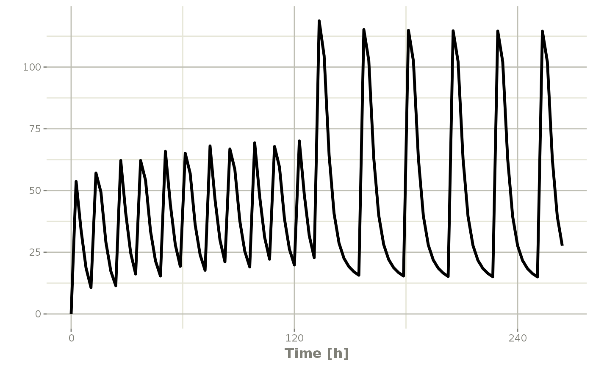

Repeat an RxODE event table
etRep(
x,
times = 1,
length.out = NA,
each = NA,
n = NULL,
wait = 0,
id = integer(0),
samples = c("clear", "use"),
waitII = c("smart", "+ii"),
ii = 24
)
# S3 method for rxEt
rep(x, ...)Arguments
| x | An RxODE event table |
|---|---|
| times | Number of times to repeat the event table |
| length.out | Invalid with RxODE event tables, will throw an error if used. |
| each | Invalid with RxODE event tables, will throw an error if used. |
| n | The number of times to repeat the event table. Overrides
|
| wait | Waiting time between each repeated event table. By default there is no waiting, or wait=0 |
| id | A integer vector of IDs to add or remove from the event table. If the event table is identical for each ID, then you may expand it to include all the IDs in this vector. All the negative IDs in this vector will be removed. |
| samples | How to handle samples when repeating an event table. The options are:
|
| waitII | This determines how waiting times between events are handled. The options are:
|
| ii | When specifying a dose, this is the inter-dose interval
for |
| ... | Times or event tables. They can also be one of the named arguments below. |
Value
An event table
References
Wang W, Hallow K, James D (2015). "A Tutorial on RxODE: Simulating Differential Equation Pharmacometric Models in R." CPT: Pharmacometrics \& Systems Pharmacology, 5(1), 3-10. ISSN 2163-8306, <URL: https://www.ncbi.nlm.nih.gov/pmc/articles/PMC4728294/>.
See also
eventTable, add.sampling,
add.dosing, et,
etRep, etRbind,
RxODE
Author
Matthew L Fidler, Wenping Wang
Examples
# \donttest{
library(RxODE)
library(units)
## Model from RxODE tutorial
mod1 <-RxODE({
KA=2.94E-01;
CL=1.86E+01;
V2=4.02E+01;
Q=1.05E+01;
V3=2.97E+02;
Kin=1;
Kout=1;
EC50=200;
C2 = centr/V2;
C3 = peri/V3;
d/dt(depot) =-KA*depot;
d/dt(centr) = KA*depot - CL*C2 - Q*C2 + Q*C3;
d/dt(peri) = Q*C2 - Q*C3;
d/dt(eff) = Kin - Kout*(1-C2/(EC50+C2))*eff;
});
#>
## These are making the more complex regimens of the RxODE tutorial
## bid for 5 days
bid <- et(timeUnits="hr") %>%
et(amt=10000,ii=12,until=set_units(5, "days"))
## qd for 5 days
qd <- et(timeUnits="hr") %>%
et(amt=20000,ii=24,until=set_units(5, "days"))
## bid for 5 days followed by qd for 5 days
et <- seq(bid,qd) %>% et(seq(0,11*24,length.out=100));
bidQd <- rxSolve(mod1, et)
plot(bidQd, C2)

## Now Infusion for 5 days followed by oral for 5 days
## note you can dose to a named compartment instead of using the compartment number
infusion <- et(timeUnits = "hr") %>%
et(amt=10000, rate=5000, ii=24, until=set_units(5, "days"), cmt="centr")
qd <- et(timeUnits = "hr") %>% et(amt=10000, ii=24, until=set_units(5, "days"), cmt="depot")
et <- seq(infusion,qd)
infusionQd <- rxSolve(mod1, et)
plot(infusionQd, C2)
 ## 2wk-on, 1wk-off
qd <- et(timeUnits = "hr") %>% et(amt=10000, ii=24, until=set_units(2, "weeks"), cmt="depot")
et <- seq(qd, set_units(1,"weeks"), qd) %>%
add.sampling(set_units(seq(0, 5.5,by=0.005),weeks))
wkOnOff <- rxSolve(mod1, et)
plot(wkOnOff, C2)
## 2wk-on, 1wk-off
qd <- et(timeUnits = "hr") %>% et(amt=10000, ii=24, until=set_units(2, "weeks"), cmt="depot")
et <- seq(qd, set_units(1,"weeks"), qd) %>%
add.sampling(set_units(seq(0, 5.5,by=0.005),weeks))
wkOnOff <- rxSolve(mod1, et)
plot(wkOnOff, C2)
 ## You can also repeat the cycle easily with the rep function
qd <-et(timeUnits = "hr") %>% et(amt=10000, ii=24, until=set_units(2, "weeks"), cmt="depot")
et <- etRep(qd, times=4, wait=set_units(1,"weeks")) %>%
add.sampling(set_units(seq(0, 12.5,by=0.005),weeks))
repCycle4 <- rxSolve(mod1, et)
plot(repCycle4, C2)
## You can also repeat the cycle easily with the rep function
qd <-et(timeUnits = "hr") %>% et(amt=10000, ii=24, until=set_units(2, "weeks"), cmt="depot")
et <- etRep(qd, times=4, wait=set_units(1,"weeks")) %>%
add.sampling(set_units(seq(0, 12.5,by=0.005),weeks))
repCycle4 <- rxSolve(mod1, et)
plot(repCycle4, C2)
 # }
# }